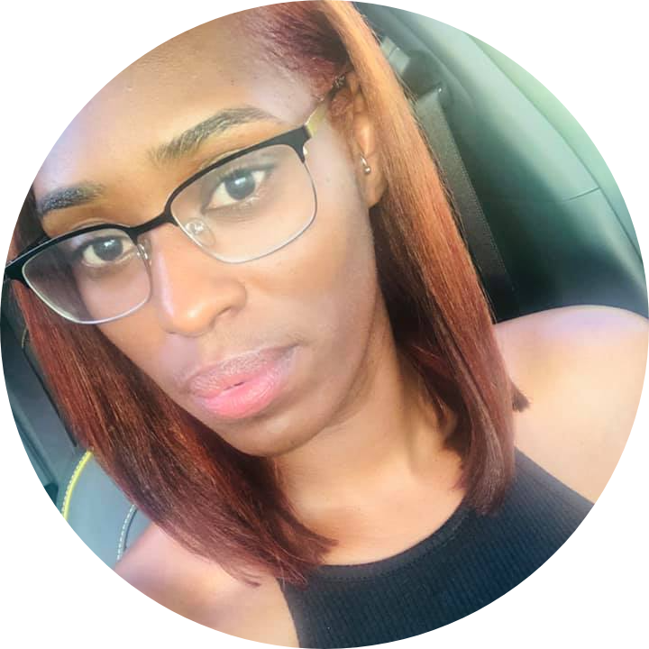

Hi all and thank you for visiting my site. My name is Domonique Adams, and I am currently a student at
Cuyahoga Community College(Tri-C) majoring in Information Technology.
I previously obtained a Bachelor of Art from Cleveland State University. I hope to be able
to go on and obtain a master’s degree in computer science once I complete my degree from Tri-C.
I became interested in computers and programming because I had become bored with my normal 9-5 job
and wanted to learn something new. As I began my journey to learn programming, I found myself highly
intrigued by how creative you can get when it comes to programming.
By taking this course I hope to obtain a better understanding of HTML. I want to become proficient in creating webpages that are not only
beautiful but functional as well. I have read that HTML and CSS skills are needed when creating mobile apps
which I am interested in learning how to create. I have previously
studied HTML, CSS, JavaScript and Python on my own, but I feel there is still a lot of room for improvement.
Two of my big dreams I have is to be able to start my own technology company creating software for small and medium businesses
and maybe one day for some of the biggest companies in the world. Another one of my big dreams, although not school or
work related, is to move to Texas. My favorite Wikipedia page is for Sammie because he is my favorite singer.